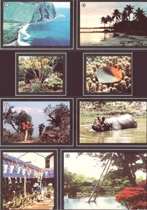

"The art of...travel, and indeed all adventure, is the art of being bold enough to enjoy life now." (W.H. Murray)
Many issues back, we warned readers that there would probably never be a better time to see the world with MOTHER, as the cost of travel was destined to climb. Sadly-and despite our efforts to hold prices down while still offering memorable, and educational, tours-this prediction has (with a few exceptions) come true. On the other hand, the dollar is currently stronger than usual against many foreign currencies, but even this financial break is likely to be temporary . . . while airfares continue on a never-ending upward spiral. So, again, we feel there's no time like the present to indulge your wanderlust.
What's more, MOTHER'S trips offer a whole lot for the money (In fact, we have some super bargains!) And in addition to organizing thoughtfully selected and carefully planned journeys, we provide opportunities for you to share your experiences with some especially interesting, like-minded folks. As one world traveler remarked during the final days of our spectacular and eventful river rafting adventure in Alaska, "You know, this whole trip has been great, but it's the people who've made it so special!"
We hope you'll be "bold enough" to join and enjoy one of our remarkable overseas adventures . . . now.
AN ENERGY-CONSCIOUS HAWAII
In order to accommodate different interests and budgets, Jordan College, our cosponsor on this trip, has put together three different options for our Hawaii Energy Tour (December 6 to 13, 1982).
For $948, you can take a two-island alternative-energy excursion of Oahu and Hawaii that-besides including the usual opportunities for sightseeing-will show you the advances being made there in wind and solar power, aquaculture, hydropower, ocean thermal energy conversion, and biomass and ethanol production. Or you can take a similar energy tour of Oahu alone for only $848, and have several days left to relax and explore on your own. Finally, if you'd simply like to take advantage of our low group travel rates, we're offering a visit to Oahu (without the guided tours) for $698.
All prices quoted are for Chicago departures (you can also leave from New York or the West Coast) and include airfare, hotels, and breakfasts. But send in your $200 deposit for this trip right away, as time is short!
SOUTH SEAS ECOLOGY
The wisdom that Paul and Anne Ehrlich bring to you via their Ecoscience column represents, of course, only a fraction of their work concerning our sweet and delicate planet. And if you add the Ehrlichs' discernment to that of their colleagues, John and Cheryl Holdren, you have one of the finest gatherings of scientific minds (and gracious personalities!) around.
On our second South Seas Seminar (January 23 to February 5, 1983), you'll have a chance to tap into this wisdom on a personal basis. There-on the Polynesian islands of Tahiti, Bora Bora, Huahine, and Rangiroa-we'll spend our mornings snorkeling in crystal-clear waters, while our tour leaders reveal the intricate ecology of the fragile submerged gardens that surround these tropical jewels. Your afternoons will be free to help in underwater research or to explore these island hideaways and their largely unchanged cultures. And each evening, the Ehrlichs and the Holdrens will lecture on environmental subjects of worldwide importance.
The cost for this South Seas winter getaway-including airfare, hotels, breakfasts, and dinners-is $2,495 from Los Angeles . . . and $200 will reserve a place.
A SPLENDID HIMALAYAN SPRING
"As I stepped out on my first day's march in the Himalayas, a strange exhilaration thrilled me. I kept squeezing my fists together and saying emphatically to myself and to the universe at large: `Oh yes! Oh yes! This really is splendid! How splendid! How splendid!' " So wrote Francis Younghusband after a 1924 trek in Nepal.
This exotic region still produces just such awe-inspiring impressions for those who invest the time and energy to explore it . . . and our Himalayan Spring Spectacular, set for March 12 to April 1, 1983 (the season during which the giant rhododendron trees are in bloom), offers as diverse a sampling of the area as possible. After a visit to Kathmandu, we'll trek a little-known route overlooking the great massifs of Annapurna and Manaslu (both of which are over 26,000 feet high) and then raft the Trisuli River down to the Royal Chitwan National Park for wildlife viewing from elephantback.
The price of this excursion (which we guarantee will be one of the most unforgettable experiences of your whole life!) is $2,750, which includes airfare from New York and all other expenses except for a few meals . . . and the shopper's bargains you won't be able to resist in Kathmandu.
A VERY SPECIAL JAPANESE JOURNEY
Almost everywhere you go in Japan-even in the patios of stores and hidden behind house walls-you'll find exquisite, serene little gardens. Though these plots are stunning in their simplicity, the horticultural practices that produce them are unique in the world and still very much a mystery to most American gardeners.
We are fortunate, then, to have Dr. John L. Creech-one of the Western world's top experts on this subtle form of garden design and cultivation-as the leader of our Study Tour of the Plants and Gardens of Japan (April 21 to May 12, 1983). Better yet, because of his long acquaintance with Japanese authorities in this field, he's able to gain access to some private gardens seldom seen by other visitors to this country. In addition, this trip has been carefully timed to catch these living works of art in all their spring glory.
The all-inclusive price (airfare from San Francisco, top Japanese hotels, and all meals) is $3,795, and a $300 deposit will hold your place on a true botanical adventure.
FINDHORN REVISITED
Though a few details are still being worked out, we're delighted to offer you a second Visit to Findhorn and Friends from June 2 to June 23, 1983. Not only will you have a chance to live and learn at the New Age community of Findhorn itself, but we'll again spend a wonderful week with those warm, fine residents of the Hebrides island of Erraid (see page 24 in this issue) . . . with tentative plans to end our stay by celebrating Midsummer Eve at Glastonbury, the legendary burial place of King Arthur (located just a short distance from Stonehenge).
Our 1982 Findhorn/Erraid visit was one of the most popular and pleasing trips that we've ever sponsored, and our 1983 version should be even better. But space is limited, so be sure to get your $200 deposit in early. The full cost will be approximately $1,790, including airfare from New York and all other expenses except for some meals en route and in Glastonbury.
AUSTRALIA ON A SHOESTRING
We were really amazed when our cosponsor, Jordan College, came up with such bargain prices for the following travel options to the International Solar Energy Society Congress, which will be held in Perth, Australia in August 1983. This international forum gives folks a chance to find out just what's happening in the alternative-energy field on a worldwide basis, as well as the opportunity to meet with its top leaders, scientists, engineers, and equipment manufacturers.
For those on a tight budget, a ten-day trip (August 10 to 20, 1983) costs $1,550, including airfare from San Francisco or Los Angeles and university housing . . . while the same trip with accommodations at a deluxe hotel is priced at only $1,675. Or, after attending the ISES Congress, you can extend your vacation until August 26-with visits to Thailand, Hong Kong, and Japan-for just $2,750. And for an extra $75 a day, you can also take advantage of an optional stopover in Hawaii or Tahiti or both. Whichever of these itineraries you choose, a $200 deposit will reserve your place. These prices, however, don't include the ISES Congress fee, which ranges from $50 for student members of the society to $170 for adult nonmembers.
To make reservations for this trip, or any of our other excursions, send your deposit ($50 of which is nonrefundable)-by certified check or money order-to Mother's Tours, 105 Stoney Mountain Road, Hendersonville, North Carolina 28791 . . . or write for more information.
|
 |
|
|